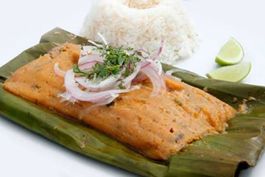
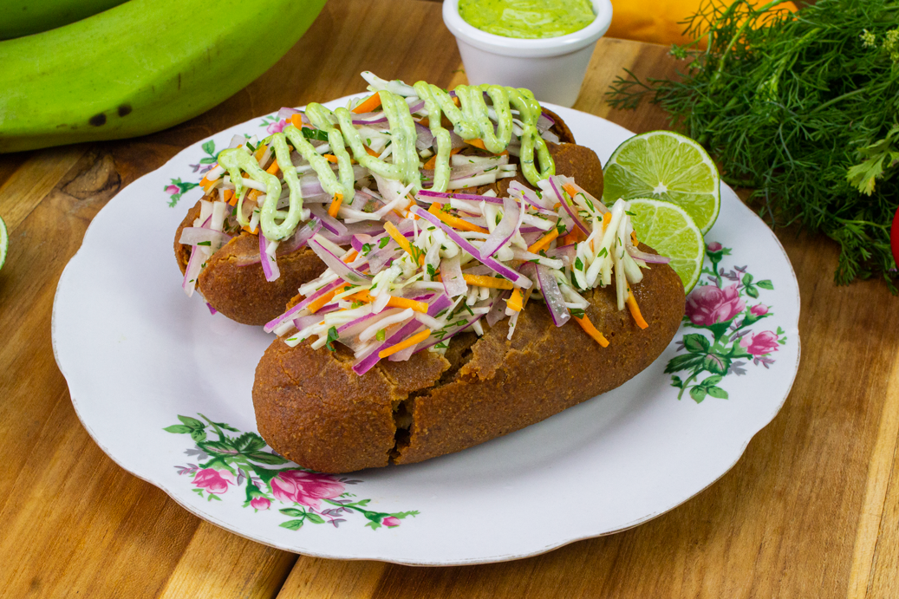
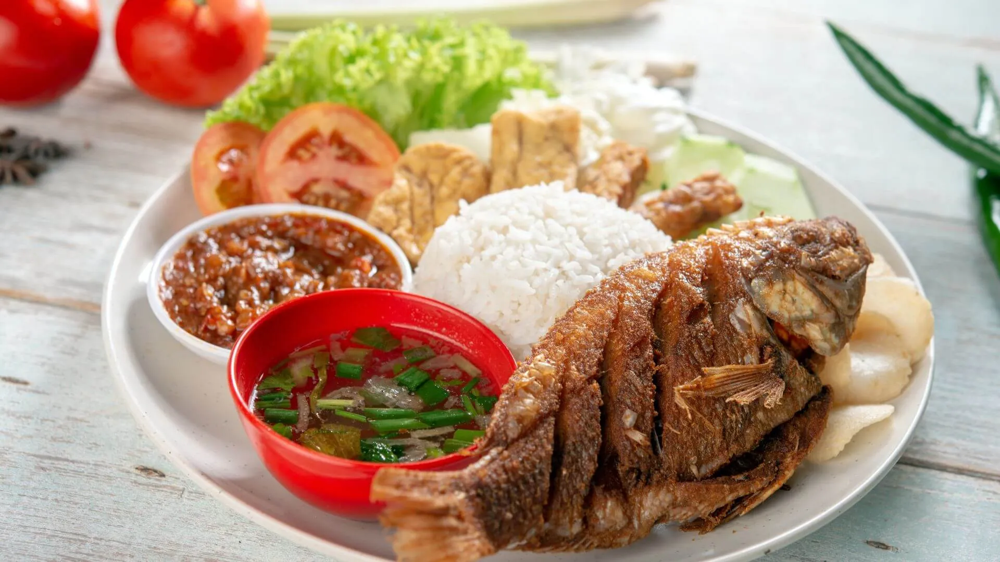
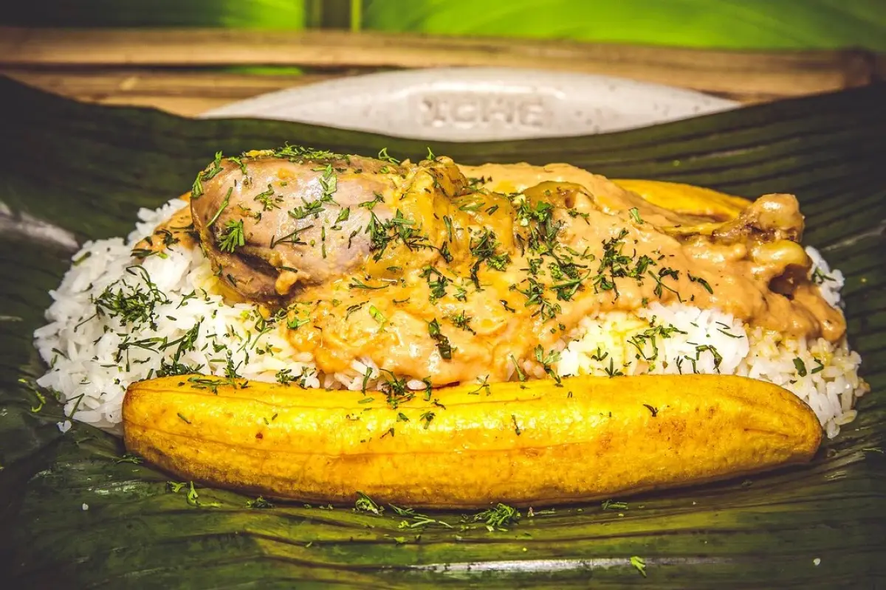
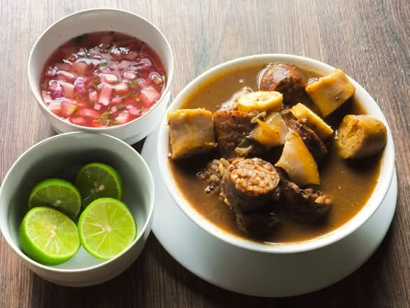

1. Descripción e historia del cantón
Valencia es un cantón ubicado al norte de la provincia de Los Ríos, en la región Costa del Ecuador. Es conocido como el Jardín de Los Ríos por su vegetación, sus tierras productivas y sus paisajes naturales.
Los orígenes de su nombre se relacionan con Gregorio Valencia, quien vivía cerca de un estero alrededor del año 1887. Con el tiempo, el sector comenzó a conocerse como Valencia.
El 17 de agosto de 1944 fue reconocido como parroquia rural del cantón Quevedo. Posteriormente, fue elevado a la categoría de cantón el 29 de diciembre de 1995.
2. Parroquias y sectores
Parroquias urbanas
- Valencia.
- La Unión.
- Nueva Unión.
El cantón también cuenta con diferentes recintos y comunidades rurales donde se desarrollan actividades agrícolas y ganaderas.
Algunos recintos y sectores
- Chipe.
- Chipe Hamburgo.
- San Pablo.
- Costa Azul.
- Guampe.
- La Cadena.
- El Vergel.
- El Achiote.
- González Suárez.
- Poza Onda.
3. Actividades económicas y gastronomía
Valencia se caracteriza por su importante producción agrícola. Sus tierras y su clima tropical favorecen el cultivo de productos que se comercializan dentro y fuera de la provincia.
Principales productos agrícolas
- Banano.
- Cacao.
- Arroz.
- Maíz.
- Plátano.
- Café.
- Maracuyá.
- Palma africana.
- Naranja y otras frutas cítricas.
También destacan la ganadería y el comercio, que generan oportunidades de trabajo para los habitantes del cantón.
Gastronomía típica
La comida tradicional de Valencia refleja la cultura montubia y los productos de la región. Entre sus preparaciones se encuentran:
- Bollo de pescado.
- Corviche de verde.
- Tilapia frita.
- Tonga.
- Caldo de manguera.





4. Lugares turísticos
Balneario San Pablo
Es uno de los lugares más visitados del cantón. Cuenta con espacios junto al río donde las familias pueden disfrutar del agua, la pesca recreativa y la gastronomía local.
Balneario Chipe
Es un atractivo natural que ofrece un ambiente para el descanso y la recreación. Cuenta con espacios junto al río, cabañas y áreas deportivas.
Complejo Turístico Mi Esterito
Es un sitio recreativo que dispone de piscinas, cabañas, hamacas, toboganes y espacios para compartir en familia.
Complejo Turístico Las Chozas
Es un lugar de entretenimiento que cuenta con áreas recreativas, piscinas y espacios para disfrutar de la naturaleza.
Complejo Turístico Felipao
Ofrece piscinas, restaurante, juegos infantiles y cabañas para pasar momentos de descanso y diversión.
Río El Laurel
Es un espacio natural rodeado de vegetación donde se pueden realizar actividades recreativas y disfrutar de la comida tradicional.
Parque Central de Valencia
Es uno de los espacios públicos más representativos de la ciudad. Cuenta con áreas verdes y espacios para el encuentro de sus habitantes.
Parque La Familia
Es un espacio destinado a la recreación familiar, con áreas infantiles y lugares para realizar actividades al aire libre.
5. Hoteles y hospedaje
Valencia dispone de alternativas de hospedaje, cabañas y complejos turísticos para recibir a las personas que visitan el cantón.
Consultar hoteles en Valencia6. Alcalde del cantón
Daniel Macías López
7. Población
Según el Censo de Población y Vivienda 2022 del Instituto Nacional de Estadística y Censos (INEC), el cantón Valencia tiene 51.509 habitantes.
Su población se distribuye entre las zonas urbanas y rurales. Una parte importante de sus habitantes trabaja en actividades agrícolas, ganaderas y comerciales.
8. Ubicación geográfica
El cantón Valencia se encuentra en la parte nororiental de la provincia de Los Ríos. Su territorio cuenta con ríos importantes como el San Pablo, Quindingua, Lulo y Manguilla.
Mapa del cantón Valencia
9. Fiestas y tradiciones
Las celebraciones de Valencia son parte importante de su identidad cultural y de sus tradiciones montubias.
- 29 de diciembre: fecha oficial de cantonización.
- 13 de diciembre: celebración principal de las fiestas de cantonización.
- 4 de octubre: festividades patronales de San Francisco de Asís.
Durante estas celebraciones se realizan actividades culturales, eventos populares y encuentros de la comunidad.